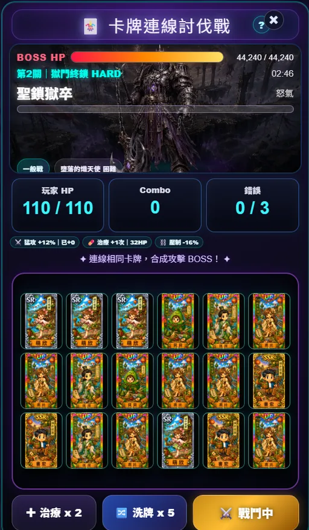
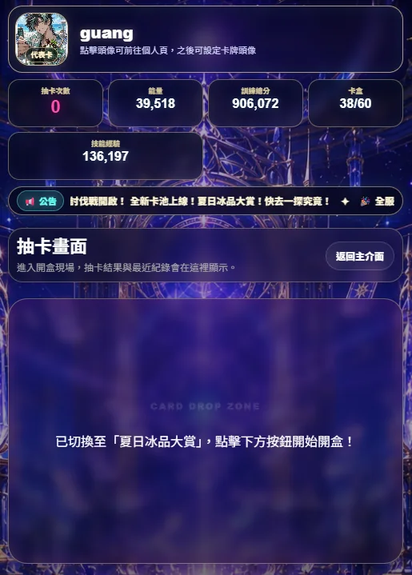
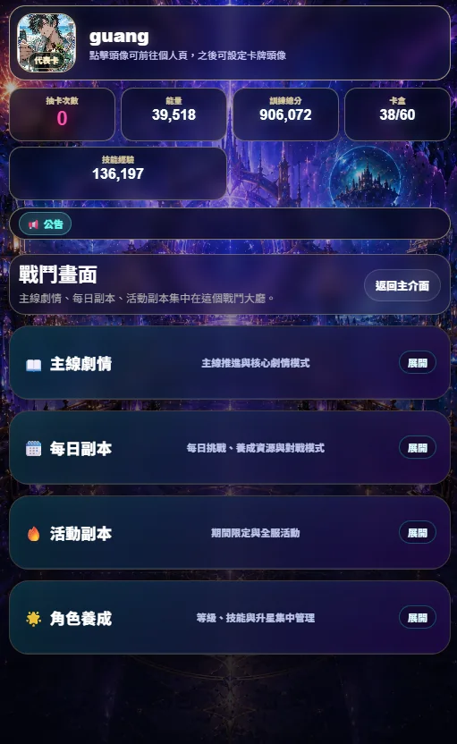
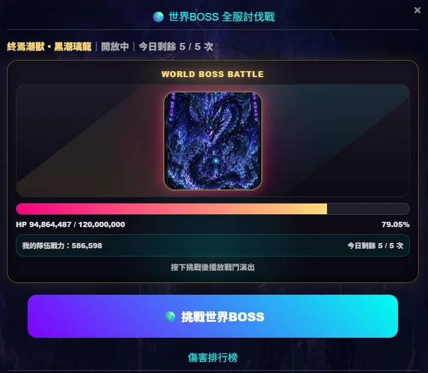
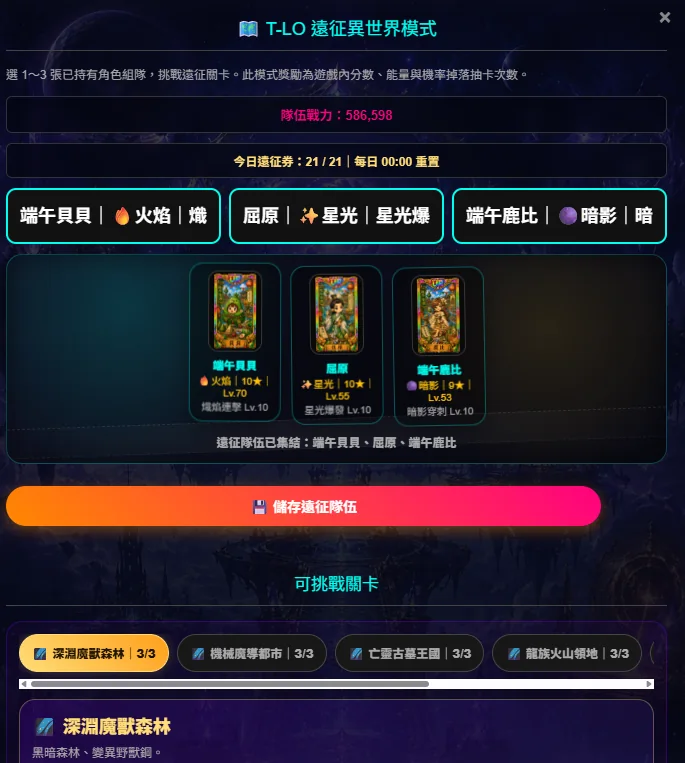

主城大廳
查看玩家狀態、公告跑馬燈、抽卡次數、能量、訓練總分與卡盒進度。
遊戲主介面已更新為星域基地風格，重要功能以大廳入口呈現，聊天與選單改為右下角快捷圖示，手機操作更接近遊戲 App。
查看玩家狀態、公告跑馬燈、抽卡次數、能量、訓練總分與卡盒進度。
選擇卡池、單抽或十連招募角色，近期抽卡結果會集中展示。
整合主線劇情、每日副本、活動副本、角色養成與世界BOSS挑戰。
世界頻道、系統頻道與好友私訊整合在聊天視窗中，私訊會主動顯示通知。
卡牌連線討伐戰是以 BOSS 血量、玩家 HP、Combo、錯誤次數與限時挑戰為核心的戰鬥模式。玩家在戰鬥區域中尋找相同角色卡，連線後合成攻擊，挑戰逐步提升的 BOSS 關卡。

以下為目前實際遊戲畫面，包含主城大廳、抽卡、戰鬥、世界BOSS、連線討伐與遠征異世界。




夏日冰品大賞以海邊、冰品與卡牌邊框為主題，強化活動卡池的收藏感。